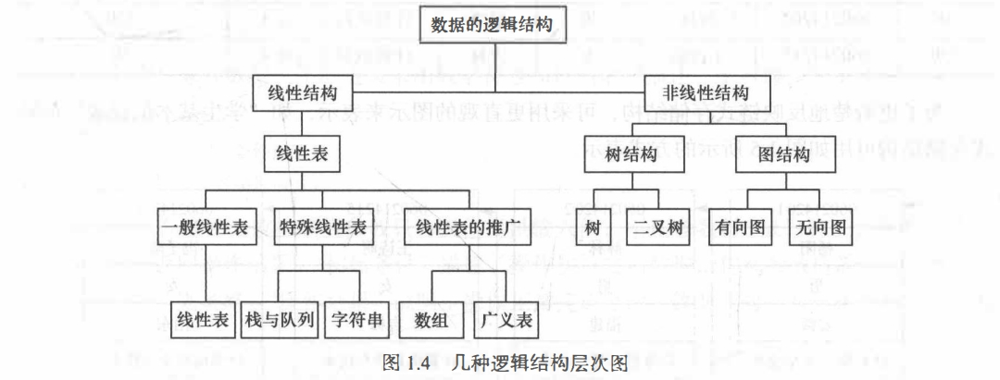

绪论
数据结构的研究内容
数据结构主要研究非数值计算问题
数据结构是一门研究非数值计算程序设计中的操作对象， 以及这些对象之间的关系和操作的学科。
例如:
- 学生学籍管理系统
- 人机对弈问题
- 最短路径问题。
基本概念和术语
数据、 数据元素、 数据项和数据对象
数据（Date)
数据 (Data) 是客观事物的符号表示，是所有能输入到计算机中并被计算机程序处理的符号的总称。
- 数学计算中用到的整数和实数
- 文本编辑中用到的字符串
- 多媒体程序处理的图形、 图像、声音及动画等通过特殊编码定义后的数据
数据元素(Data Element)
数据元素(Data Element)是数据的基本单位，在计算机中通常作为一个整体进行考虑和处理。 在有些情况下，数据元素也称为元素、记录等
数据元素用千完整地描述一个对象
- 一名学生记录
- 树中棋盘的一个格局（状态）
- 及图中的一个顶点
数据对象 (Data Object)
数据对象 (Data Object) 是性质相同的数据元素的集合，是数据的一个子集。
- 整数数据对象是集合N= {0, 士1' 士2,…}
- 字母字符数据对象是集合C= {'A','B', …，'Z','a','b', …， 'z'}
- 学生基本信息表也可以是一个数据对象
只要集合内元素的性质均相同，都可称之为一个数据对象。
数据结构
[!note]
数据结构 (Data Structure) 是相互之间存在一种或多种特定关系的数据元素的集合。
- 数据结构是带 ”结构＂ 的数据元素的集合
- “结构” 就是指数据元素之间存在的关系
逻辑结构
数据的逻辑结构是从逻辑关系上描述数据，它与数据的存储无关，是独立千计算机的。
- 数据的逻辑结构可以看作是从具体问题抽象出来的数学模型。
数据的逻辑结构有两个要素
数据元素
关系 （指数据元素间的逻辑关系）
集合结构
数据元素之间除了 “属于同一集合” 的关系外，别无其他关系。例如，确定一名学生是否为 班级成员， 只需将班级看做一个集合结构。
线性结构
数据元素之间存在一对一的关系。例如，将学生信息数据按照其入学报到的时间先后顺序进 行排列，将组成一个线性结构。
树结构
数据元素之间存在一对多的关系。例如，在班级的管理体系中，班长管理多个组长，每位组长管理多名组员，从而构成树形结构。
图结构或网状结构
数据元素之间存在多对多的关系。例如，多位同学之间的朋友关系， 任何两位同学都可以是朋友，从而构成图状结构或网状结构。
线性结构
- 线性表（典型的线性结构，如例1.1中的学生基本信息表）
- 栈和队列（具有特 4 l 第1章 绪论 I 殊限制的线性表，数据操作只能在表的一端或两端进行）
- 字符串（也是特殊的线性表，其特殊性 表现在它的数据元素仅由一个字符组成）
- 数组（是线性表的推广，它的数据元素是一个线性表）
- 广义表（也是线性表的推广，它的数据元素是一个线性表，但不同构，即或者是单元素，或者是 线性表）
非线性结构
- 树（具有多个分支的层次结构）
- 二叉树（具有两个分支的层次结构）
- 有向图（一种图结构，边是顶点的有序对）
- 无向图（另一种图结构，边是顶点的无序对）
存储结构
- 存储结构是逻辑结构在计算机中的存储表示
- 有两类存储结构：顺序存储结构和链式存储结构。

算法和算法分析
算法定义及其特性
算法 (Algorithm) 是为了解决某类问题而规定的一个有限长的操作序列。
算法由有限条指令构成，规定了解决特定问题的一系列操作。
一个算法必须满足以下五个重要特性。
- 有穷性：有限个步骤之后终止。
- 确定性：每条指令有明确的含义。
- 可行性：通过已经实现的基本运算执行有限次来完成。
- 输入：外界提供的量。
- 输出：结果。
评价算法优劣的基本标准
- 正确性：正确结果
- 可读性：
- 健壮性（鲁棒性）：对有缺失、有噪声或有错误的输入数据，算法应具有较强的适应能力。
- 高效性：时空复杂度。
时间复杂度
- 影响算法时间代价的最主要因素是问题规模。
问题规模是算法求解问题输入量的多少，是问题大小的本质表示，一般用整数n表示。
一条语句的重复执行次数称作语句频度(FrequencyCount)
- 而对于时间复杂度，取决于基本运算
- 基本运算是指算法运行过程中起主要作用且花费时间最多的运算
空间复杂度
算法在实现时所需要的辅助空间